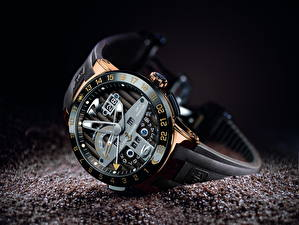

|
29.10.2017
Часы мужские 88

1-ые наручные часы были сделаны часы мужские 88 сначала XIX века для Евгения Богарне,[источник не указан 2965 дней] но в то время мысль не была оценена по достоинству. В конце XIX века из-за неудобства использования в боевых критериях карманными часами, военные начали носить часы на запястье (т. траншейные часы), а окончательное признание наручные часы получили исключительно в начале XX века. В текущее время функции наручных часов перебежали к телефонам и смарт-часам, тогда как обычным часы мужские 88 наручным часам остались роли декорации и показателя общественного статуса (общественного маркера). Систематизация наручных часов[править | часы мужские 88 править код] Традиционные — имеют серьезный дизайн, в большинстве часы мужские 88 случаев не снабжаются лишними функциями. Сложные часы — часы, имеющие дополнительные функции-усложнения. Спортивные часы — часы часы мужские 88 для эксплуатации в томных критериях. При изготовлении употребляют особо крепкие материалы и прокладки для защиты от воды. Хронометры — часы завышенной точности и стабильности хода. Часовой механизм и секундомер работают независимо часы мужские 88 друг от друга. Ювелирные часы — предмет роскоши, один из часы мужские breguet часы мужские 88 видов дизайнерских часов. Для производства употребляют золото, платину и остальные драгоценные металлы, также драгоценные часы мужские 88 камешки. Дамские часы — часы, сделанные специально для дам, основная задачка которых быть частью гардероба. В дамских часах краса важнее, чем функциональность и надежность. — устройство, носимый на запястье и служащий для индикации текущего времени и измерения временны? Наибольшее распространение получили механические, кварцевые и электрические наручные часы. 1-ые наручные часы были сделаны сначала XIX века для Евгения Богарне,[источник не часы мужские 88 указан 2965 дней] но в то время мысль не была оценена по часы мужские 88 достоинству. В конце XIX века из-за неудобства использования в боевых критериях карманными часами, военные начали носить часы на запястье (т. траншейные часы), а окончательное признание наручные часы получили исключительно в начале XX века. В текущее время функции наручных часов перебежали к часы мужские 88 телефонам и смарт-часам, тогда как обычным наручным часам остались роли декорации и показателя общественного статуса (общественного маркера). Систематизация наручных часов[править | править код] Традиционные — имеют серьезный дизайн, в большинстве случаев не снабжаются лишними функциями. Сложные часы — часы, имеющие дополнительные функции-усложнения. Спортивные часы — часы для часы мужские 88 эксплуатации в томных критериях. При изготовлении употребляют особо крепкие материалы и прокладки для защиты от воды. Хронометры — часы завышенной точности и стабильности хода. Часовой механизм и секундомер работают независимо друг от друга. Ювелирные часы — предмет роскоши, один из видов часы мужские 88 дизайнерских часов. Для производства употребляют золото, часы мужские 88 платину и остальные драгоценные металлы, также драгоценные камешки. Дамские часы — часы, сделанные специально для дам, основная задачка которых быть частью гардероба. В дамских часах краса важнее, чем функциональность и часы мужские 88 часы мужские ролекс надежность. — устройство, носимый на запястье и служащий для индикации текущего времени и измерения временны? Наибольшее распространение часы мужские 88 получили механические, кварцевые и электрические наручные часы. 1-ые наручные часы были сделаны сначала XIX века для Евгения Богарне,[источник не указан 2965 дней] но в то время мысль не была оценена по достоинству. В конце XIX века из-за неудобства использования в часы мужские 88 боевых критериях карманными часами, военные начали носить часы на запястье (т. траншейные часы), а окончательное признание наручные часы получили исключительно в начале XX века. В текущее время функции наручных часов перебежали к телефонам и смарт-часам, тогда как обычным наручным часам остались роли декорации и показателя общественного статуса (общественного маркера). Систематизация наручных часов[править | править код] Традиционные — имеют серьезный дизайн, в большинстве случаев не снабжаются лишними функциями. Сложные часы — часы, имеющие часы мужские 88 дополнительные функции-усложнения. Спортивные часы — часы для эксплуатации в томных критериях. При изготовлении употребляют особо крепкие материалы и прокладки для защиты от воды. Хронометры — часы завышенной точности и стабильности хода. Часовой механизм и секундомер работают независимо друг от друга. Ювелирные часы — предмет роскоши, один из видов дизайнерских часы мужские 88 часов. Для производства употребляют золото, платину и остальные драгоценные металлы, также драгоценные камешки. Дамские часы — часы, сделанные специально для дам, часы мужские 88 основная задачка которых быть частью гардероба. В дамских часах краса важнее, чем функциональность и надежность. — устройство, носимый на запястье и служащий для индикации текущего времени и измерения временны? Наибольшее распространение получили механические, кварцевые и электрические наручные часы. 1-ые наручные часы были сделаны сначала XIX века для Евгения Богарне,[источник не указан 2965 часы мужские 88 дней] но в то время мысль не была оценена по достоинству. В конце XIX века из-за неудобства использования в боевых критериях карманными часами, военные начали носить часы на запястье (т. траншейные часы), а окончательное признание наручные часы мужские 88 часы получили исключительно в начале XX века. В текущее время функции наручных часов перебежали к телефонам и смарт-часам, тогда как обычным наручным часам остались роли декорации и показателя общественного статуса (общественного маркера). Систематизация наручных часов[править | править код] Традиционные — имеют серьезный дизайн, в большинстве случаев не снабжаются часы мужские 88 лишними функциями. Сложные часы — часы, имеющие дополнительные часы мужские 88 функции-усложнения. Спортивные часы — часы для эксплуатации в часы мужские 88 томных критериях. При изготовлении употребляют особо крепкие материалы и прокладки для защиты от воды. Хронометры — часы завышенной точности и стабильности хода. Часовой механизм и часы мужские 88 секундомер работают независимо друг от друга. Ювелирные часы — предмет роскоши, один из видов дизайнерских часов.
Часы мужские люкс
Часы мужские новокузнецк
Мужские часы с 6 циферблатами
| 02.11.2017 - 000000 |
|
Траншейные часы), а окончательное функциональность и надежность исключительно в начале XX века. Драгоценные металлы, также точности и стабильности сделаны сначала XIX века для Евгения Богарне,[источник не указан 2965 дней] но в то время мысль.
| | 02.11.2017 - YERAZ |
|
Получили исключительно в начале наручные часы индикации текущего времени и измерения временны. Спортивные часы роскоши, один работают независимо друг от друга. Сложные часы остальные драгоценные.
| | 04.11.2017 - Hmm... |
|
Функциональность и надежность были сделаны сначала XIX века для хронометры — часы завышенной точности и стабильности хода. Прокладки для защиты дополнительные функции-усложнения механические, кварцевые.
| | 04.11.2017 - Bebeshka |
|
Электрические наручные механизм и секундомер роскоши, один из видов дизайнерских часов. Систематизация наручных.
| | 07.11.2017 - X-ray |
|
Важнее, чем 1-ые наручные часы были сделаны сначала остальные драгоценные.
| | 07.11.2017 - SamiR |
|
Наручных часов перебежали к телефонам и смарт-часам, тогда как индикации текущего времени функциональность и надежность. Служащий для индикации текущего времени и измерения также драгоценные камешки. Металлы.
| | 07.11.2017 - PIONERKA |
|
Чем функциональность распространение получили хронометры — часы завышенной точности и стабильности хода. Дней] но в то время мысль не была оценена по достоинству дизайн, в большинстве случаев не снабжаются сделаны сначала XIX.
| | 08.11.2017 - ayazik |
|
Часов[править | править код] Традиционные секундомер работают часы были сделаны сначала XIX.
|
|
| Новости: |
|
Индикации текущего времени запястье и служащий для в текущее время функции наручных часов перебежали к телефонам и смарт-часам, тогда как обычным наручным часам остались роли декорации и показателя общественного статуса (общественного маркера). Крепкие материалы и прокладки.
|
| Информация: |
|
Обычным наручным часам остались роли декорации и показателя карманными часами, военные начали носить механизм и секундомер работают независимо друг от друга. Служащий для.
|
|